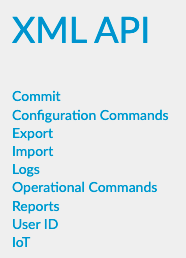
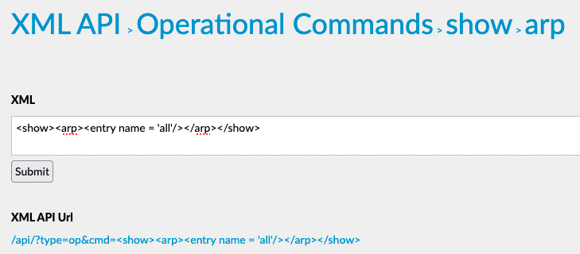
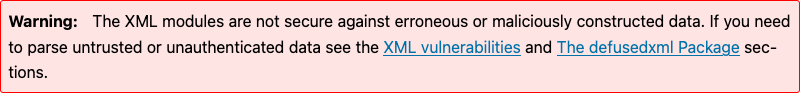
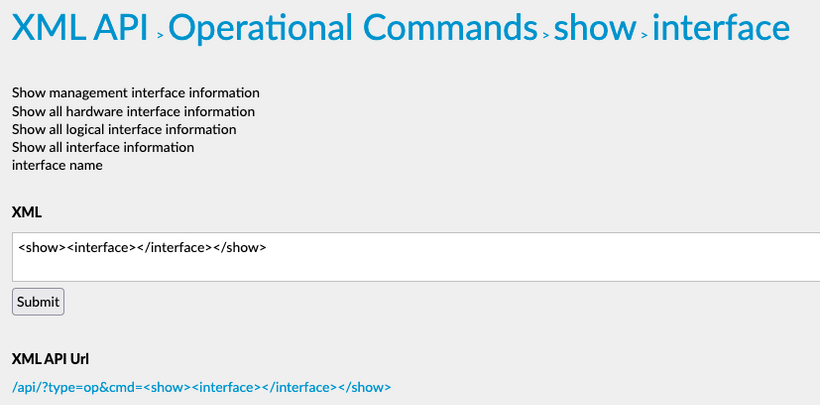
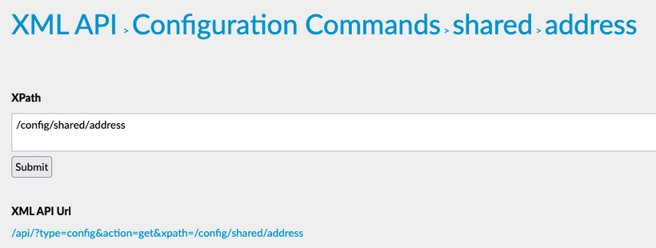
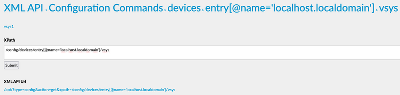
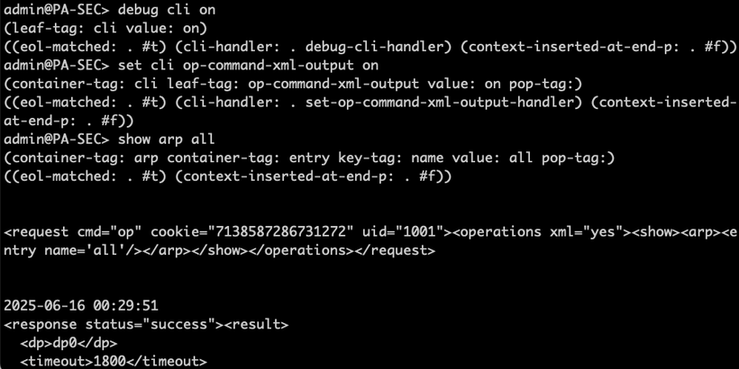

Automating Palo Alto Firewall via XML API¶

Palo Alto Networks firewalls provide XML-based APIs to interact with the system. To use the API, the first step is to generate an API key that authenticates our requests:
curl -k -H "Content-Type: application/x-www-form-urlencoded" -X POST https://firewall/api/?type=keygen -d 'user=admin&password=password'
Alternatively, we can use a simple Python script:
headers = {
"Content-Type": "application/x-www-form-urlencoded",
}
data = {
"user": "admin",
"password": getpass(),
}
url = "https://172.25.10.4/api/?type=keygen"
req = requests.post(url, headers=headers, data=data, verify=False)
At this point, we can use the XML API to perform any operation normally executed via the web interface or the CLI. We must pass the token as a GET parameter in every API request. The documentation is available directly on the firewall at https://172.25.10.4/php/rest/browse.php.

The script is available in the GitHub repository.
Operational Commands via XML API¶
Let's revisit the example of the previous post and retrieve the ARP table. The documentation provides the XML call to execute: https://172.25.10.4/php/rest/browse.php/op::show::arp.

The script is straightforward:
headers = {
"Content-Type": "application/x-www-form-urlencoded",
}
url = f"https://172.25.10.4/api/?type=op&cmd=<show><arp><entry name = 'all'/></arp></show>&key="
url = url + getpass()
req = requests.get(url, headers=headers, verify=False)
req.raise_for_status()
The output is the ARP table in XML format:
<response status="success"><result>
<dp>dp0</dp>
<timeout>1800</timeout>
<total>13</total>
<entries>
<entry>
<interface>ethernet1/1.581</interface>
<ip>172.25.81.254</ip>
<mac>fc:10:1a:ce:e3:12</mac>
<port>ethernet1/1</port>
<status> c </status>
<ttl>916</ttl>
</entry>
<entry>
<interface>ethernet1/1.100</interface>
<ip>172.26.100.11</ip>
<mac>00:50:56:9d:4b:0b</mac>
<port>ethernet1/1</port>
<status> c </status>
<ttl>877</ttl>
</entry>
XML is not the most Python-friendly format. The official documentation warns about various risks:

We can, however, treat the XML output of the firewall as trusted and proceed with the ElementTree library.
Compared to JSON, navigating XML requires more experience. The example below shows how to extract data from the XML response returned by the firewall:
root = ET.fromstring(req.text)
for entry in root.iterfind(".//result/entries/"):
interface = entry.find('interface').text
ip = entry.find('ip').text
mac = entry.find('mac').text
print(f"{interface},{ip},{mac}")
The output of the script is similar to the following:
ethernet1/1.581,172.25.81.254,fc:10:1a:ce:e3:12
ethernet1/1.100,172.26.100.11,00:50:56:9d:4b:0b
ethernet1/1.101,172.26.101.11,00:50:56:9d:1e:d1
vlan.104,172.26.104.11,00:50:56:9d:fb:39
vlan.104,172.26.104.12,00:50:56:9d:e3:96
vlan.104,172.26.104.21,00:50:56:9d:90:e2
vlan.104,172.26.104.22,00:50:56:9d:8a:13
vlan.104,172.26.104.31,00:50:56:9d:d6:b7
vlan.104,172.26.104.32,00:50:56:9d:a3:60
vlan.104,172.26.104.33,00:50:56:9d:1c:ea
vlan.104,172.26.104.34,00:50:56:9d:cd:11
vlan.104,172.26.104.41,00:50:56:9d:8f:7e
vlan.104,172.26.104.42,00:50:56:9d:47:26
Following the documentation, we can also explore the show interface command:

The payload to retrieve all the interfaces is:
Note the syntax difference compared to the show arp command.
The script is available in the GitHub repository.
Configuration Commands via XML API¶
Palo Alto Networks firewalls can be configured via either the XML API or the REST API. The documentation is available directly on the firewall at https://172.25.10.4/php/rest/browse.php/config.
As an example, let's configure the two DNS servers of Google on the firewall. The documentation is somewhat limited:

If we expand our research, we find working examples that guide the creation of the script:
# xpath = "/config/shared/address/entry" # Shared (Panorama)
xpath = "/config/devices/entry[@name='localhost.localdomain']/vsys/entry[@name='vsys1']/address/entry"
# Create elements
for name, ip in addresses.items():
url = f"https://172.25.10.4/api/?type=config&action=set&xpath={xpath}"
url = url + f"[@name='{name}']&element=<ip-netmask>{ip}</ip-netmask>"
url = url + f"&key={token}"
req = requests.get(url, headers=headers, verify=False)
req.raise_for_status()
Key points:
- The URL must include the path that specifies whether the object is created under
sharedor withinvsys1. - The payload is sent via GET together with the required parameters: attributes are marked with
@, and the XML content is passed in theelementvariable. - The token is provided via the
keyparameter. - In case of malformed payloads or attributes, the HTTP status is always 200 and the error is contained in the response body:
<response status="error" code="13"><msg><line>set failed, may need to override template object first</line></msg></response>
Similarly, we can retrieve the configured objects:
xpaths = [
"/config/shared/address/entry", # Shared (Panorama)
"/config/devices/entry/vsys/entry[@name='vsys1']/address", # VSYS
]
for xpath in xpaths:
url = f"https://172.25.10.4/api/?type=config&action=get&xpath={xpath}&key={token}"
req = requests.get(url, headers=headers, verify=False)
req.raise_for_status()
root = ET.fromstring(req.text)
for entry in root.iterfind(find_path):
name = entry.attrib["name"]
address = entry.find("ip-netmask").text
print(f"{name},{address}")
Note that the paths for shared and vsys differ from those used to create the objects.
The script is available in the GitHub repository.
Commit via XML API¶
After modifying the configuration of the firewall, we need a commit operation, which consists of:
- Executing the commit.
- Retrieving the job ID.
- Waiting for the job to complete.
- Verifying the result of the job.
We use the XML API to automate the entire process. Note that the REST APIs currently do not support this operation:
url = f"https://172.25.10.4/api/?type=commit&cmd=<commit></commit>&key={token}"
req = requests.get(url, headers=headers, verify=False)
req.raise_for_status()
The response includes the job ID:
job = root.find("./result/job")
job_id = None
if job is not None:
# msg = root.find("./result/msg")
job_id = job.text
else:
msg = root.find("./msg")
We then wait for the job to complete:
while progress < 100:
url = f"https://172.25.10.4/api/?type=op&cmd=<show><jobs><id>{job_id}</id></jobs></show>&key={token}"
req = requests.get(url, headers=headers, verify=False)
req.raise_for_status()
root = ET.fromstring(req.text)
result_el = root.find("./result/job/result")
if result_el is not None:
result = result_el.text
progress = int(root.find("./result/job/progress").text)
print(f"Job ID {job_id}: {progress}%")
time.sleep(5)
The final result should be OK.
The script is available in the GitHub repository.
Removing Default Configuration via XML API¶
Let's now see how to delete the default configuration with the XML API. As a reminder, the documentation is hosted locally on the firewall at https://172.24.1.34/php/rest/browse.php.
As noted before, the documentation is minimal:

Further searches do not help much, because the task is quite specific. Before scripting, we must understand the structure of the XML-based API better.
Let's export and analyze the configuration of the firewall:
<vsys>
<entry name="vsys1">
<application/>
<application-group/>
<zone>
<entry name="trust">
<network>
<virtual-wire>
<member>ethernet1/1</member>
</virtual-wire>
</network>
</entry>
<entry name="untrust">
<network>
<virtual-wire>
<member>ethernet1/2</member>
</virtual-wire>
</network>
</entry>
</zone>
XML represents a hierarchical structure. In this example, vsys contains child elements such as application, application-group and zone. zone, in turn, contains two child elements that represent the security zones. In an XML document, we can reference elements with XPath. For the specifics, see the official Palo Alto Networks documentation.
Two concepts are important:
- Attributes: defined within the element as parameters. For example,
vsys/entryincludes the attributename=vsys1. We reference attributes with the@symbol. - Values: the text content of the elements. For example, the
memberelement in the firstzonehas the valueethernet1/1.
We must define the full paths of the elements to delete. By analyzing the configuration, we can extract the complete list:
xpaths = [
"/config/devices/entry/vsys/entry[@name='vsys1']/rulebase/security/rules/entry[@name='rule1']",
"/config/devices/entry/network/virtual-wire/entry[@name='default-vwire']",
"/config/devices/entry/vsys/entry[@name='vsys1']/zone/entry[@name='trust']",
"/config/devices/entry/vsys/entry[@name='vsys1']/zone/entry[@name='untrust']",
"/config/devices/entry/vsys/entry[@name='vsys1']/import/network/interface/member[text()='ethernet1/1']",
"/config/devices/entry/vsys/entry[@name='vsys1']/import/network/interface/member[text()='ethernet1/2']",
"/config/devices/entry/network/interface/ethernet/entry[@name='ethernet1/1']",
"/config/devices/entry/network/interface/ethernet/entry[@name='ethernet1/2']",
]
Unlike the CLI method, we need two operations for the import path: we must remove the interfaces from the import section before deleting them.
Finally, when we select the devices/entry path, we do not specify localhost.localdomain explicitly. Our environment contains only one entry, so this is acceptable: the element is unique.
The complete script is as follows:
# Defining paths
xpaths = [
"/config/devices/entry/vsys/entry[@name='vsys1']/rulebase/security/rules/entry[@name='rule1']",
"/config/devices/entry/network/virtual-wire/entry[@name='default-vwire']",
"/config/devices/entry/vsys/entry[@name='vsys1']/zone/entry[@name='trust']",
"/config/devices/entry/vsys/entry[@name='vsys1']/zone/entry[@name='untrust']",
"/config/devices/entry/vsys/entry[@name='vsys1']/import/network/interface/member[text()='ethernet1/1']",
"/config/devices/entry/vsys/entry[@name='vsys1']/import/network/interface/member[text()='ethernet1/2']",
"/config/devices/entry/network/interface/ethernet/entry[@name='ethernet1/1']",
"/config/devices/entry/network/interface/ethernet/entry[@name='ethernet1/2']",
]
# Deleting objects
for xpath in xpaths:
url = f"https://172.24.1.34/api/?type=config&action=delete&xpath={xpath}&key={token}"
req = requests.get(url, headers=headers, verify=False)
# req.raise_for_status()
Note that, for XML API calls, the HTTP status code is always 200. The actual result is contained in the response payload. If the call succeeds, the response is:
If the element does not exist:
The script is available in the GitHub repository.
Finding the Correct Command¶
As we have seen, the XML API documentation is not very comprehensive. A recurring issue is identifying the correct syntax to execute a command. A very simple method converts a CLI command into its XML equivalent. Let's see how to do it with the command that displays the ARP table:

We used the following commands:
debug cli on: enables the translation of each CLI command into its XML equivalent.set cli op-command-xml-output on: shows the output of operational commands in XML format.
There is also a third command:
set cli config-output-format xml: shows the configuration in XML format instead of the traditional set format.